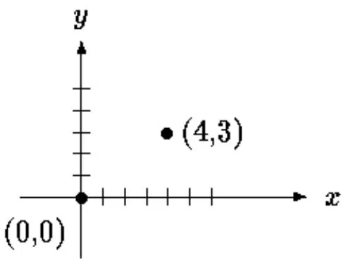
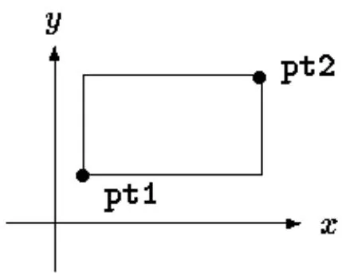
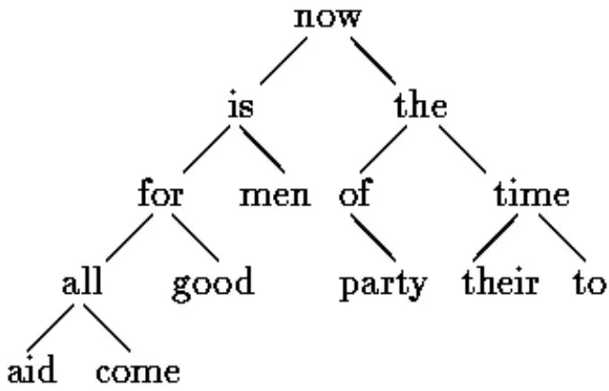
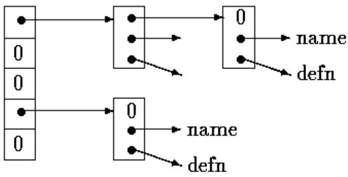

A structure is a collection of one or more variables, possibly of different types, grouped together under a single name for convenient handling. (Structures are called "records" in some languages, notably Pascal.) Structures help to organize complicated data, particularly in large programs, because they permit a group of related variables to be treated as a unit instead of as separate entities.
结构是可以把一个或多个变量（类型可以不同）集合在一起、用一个名字方便地处理的数据类型。（结构在某些语言——特别是 Pascal——中称为“记录”。）结构有助于组织复杂的数据，尤其是在大型程序中，因为它允许把一组相关变量当作一个整体来处理，而不是当作彼此独立的实体。
One traditional example of a structure is the payroll record: an employee is described by a set of attributes such as name, address, social security number, salary, etc. Some of these in turn could be structures: a name has several components, as does an address and even a salary. Another example, more typical for C, comes from graphics: a point is a pair of coordinate, a rectangle is a pair of points, and so on.
结构的一个传统例子是工资记录：雇员由一组属性来描述，如姓名、地址、社会保险号、工资等。其中某些属性本身又可以是结构：姓名有多个组成部分，地址如此，甚至工资也是如此。另一个对 C 而言更典型的例子来自图形领域：点是一对坐标，矩形是一对点，等等。
The main change made by the ANSI standard is to define structure assignment - structures may be copied and assigned to, passed to functions, and returned by functions. This has been supported by most compilers for many years, but the properties are now precisely defined. Automatic structures and arrays may now also be initialized.
ANSI 标准所作的主要改动是定义了结构赋值——结构可以被复制、被赋值、传给函数、由函数返回。大多数编译器多年来一直支持这些特性，但过去没有精确定义其性质。现在自动结构（和数组）也可以初始化了。
Let us create a few structures suitable for graphics. The basic object is a point, which we will assume has an x coordinate and a y coordinate, both integers.
我们来创建几个适合图形领域的结构。基本对象是点，假定它有 x 坐标和 y 坐标，两者都是整数。

The two components can be placed in a structure declared like this:
struct point {
int x;
int y;
};
The keyword struct introduces a structure declaration, which is a list of declarations enclosed in braces. An optional name called a structure tag may follow the word struct (as with point here). The tag names this kind of structure, and can be used subsequently as a shorthand for the part of the declaration in braces.
关键字 struct 引入结构声明，结构声明由花括号括起来的一组声明组成。struct 后面可以跟一个可选的名字，称为结构标记（structure tag，本例中为 point）。标记给这类结构命名，以后就可以用它作为花括号中声明部分的简写形式。
The variables named in a structure are called members. A structure member or tag and an ordinary (i.e., non-member) variable can have the same name without conflict, since they can always be distinguished by context. Furthermore, the same member names may occur in different structures, although as a matter of style one would normally use the same names only for closely related objects.
结构中命名的变量称为成员。结构成员（或结构标记）与普通变量（即非成员变量）可以同名而不冲突，因为通过上下文总能区分它们。此外，不同的结构中也可以使用相同的成员名，不过从风格上讲，通常只有关系紧密的对象才使用相同的名字。
A struct declaration defines a type. The right brace that terminates the list of members may be followed by a list of variables, just as for any basic type. That is,
struct 声明定义了一种类型。结束成员列表的右花括号后面可以跟一个变量表，就像其他基本类型一样。也就是说，
struct { ... } x, y, z;
is syntactically analogous to
在语法上与
int x, y, z;
in the sense that each statement declares x, y and z to be variables of the named type and causes space to be set aside for them.
是类似的，两个语句都把 x、y、z 声明为该类型的变量，并为它们分配存储空间。
A structure declaration that is not followed by a list of variables reserves no storage; it merely describes a template or shape of a structure. If the declaration is tagged, however, the tag can be used later in definitions of instances of the structure. For example, given the declaration of point above,
后面不跟变量表的结构声明不会分配存储空间，它仅仅描述结构的模板或形状。但是，如果声明带有标记，那么以后就可以用该标记来定义结构的实例。例如，给定上面 point 的声明，
struct point pt;
defines a variable pt which is a structure of type struct point. A structure can be initialized by following its definition with a list of initializers, each a constant expression, for the members:
就定义了一个变量 pt，它是 struct point 类型的结构。可以在结构定义后面跟一个初始值列表（每个初始值都是常量表达式）来初始化结构的成员：
struct maxpt = { 320, 200 };
An automatic structure may also be initialized by assignment or by calling a function that returns a structure of the right type.
自动结构还可以通过赋值初始化，或者通过调用一个返回相应类型结构的函数来初始化。
A member of a particular structure is referred to in an expression by a construction of the form
在表达式中，可以通过如下形式的构造来引用特定结构中的成员：
structure-name.member
The structure member operator "." connects the structure name and the member name. To print the coordinates of the point pt, for instance,
结构成员运算符“.”把结构名和成员名连接起来。例如，要打印点 pt 的坐标，
printf("%d,%d", pt.x, pt.y);
or to compute the distance from the origin (0,0) to pt,
或者计算从原点 (0,0) 到 pt 的距离，
double dist, sqrt(double);
dist = sqrt((double)pt.x * pt.x + (double)pt.y * pt.y);
Structures can be nested. One representation of a rectangle is a pair of points that denote the diagonally opposite corners:
结构可以嵌套。矩形的一种表示方法是用一对点来表示对角线上的两个顶点：
struct rect {
struct point pt1;
struct point pt2;
};
The rect structure contains two point structures. If we declare screen as
rect 结构包含两个 point 结构。如果像下面这样声明 screen：
struct rect screen;
then
则其中的
screen.pt1.x
refers to the x coordinate of the pt1 member of screen.
指的是 screen 的成员 pt1 的 x 坐标。

The only legal operations on a structure are copying it or assigning to it as a unit, taking its address with &, and accessing its members. Copy and assignment include passing arguments to functions and returning values from functions as well. Structures may not be compared. A structure may be initialized by a list of constant member values; an automatic structure may also be initialized by an assignment.
对结构的合法操作只有：作为一个整体复制或赋值、用 & 取其地址、访问其成员。复制和赋值也包括把结构传给函数、由函数返回结构。结构之间不能进行比较。结构可以用常量成员值列表初始化；自动结构还可以通过赋值来初始化。
Let us investigate structures by writing some functions to manipulate points and rectangles. There are at least three possible approaches: pass components separately, pass an entire structure, or pass a pointer to it. Each has its good points and bad points.
下面通过编写一些操作点和矩形的函数来研究结构。至少有三种可行的方法：分别传递各个成员、传递整个结构、或者传递指向结构的指针。每种方法各有优缺点。
The first function, makepoint, will take two integers and return a point structure:
第一个函数 makepoint 接受两个整数并返回一个 point 结构：
/* makepoint: make a point from x and y components */
struct point makepoint(int x, int y)
{
struct point temp;
temp.x = x;
temp.y = y;
return temp;
}
Notice that there is no conflict between the argument name and the member with the same name; indeed the re-use of the names stresses the relationship.
注意，参数名和同名成员之间不会冲突；实际上，重用这些名字反而强调了它们之间的关系。
makepoint can now be used to initialize any structure dynamically, or to provide structure arguments to a function:
现在可以用 makepoint 动态地初始化任何结构，或者给函数提供结构参数：
struct point middle;
struct point makepoint(int, int);
screen.pt1 = makepoint(0, 0);
screen.pt2 = makepoint(XMAX, YMAX);
middle = makepoint((screen.pt1.x + screen.pt2.x)/2,
(screen.pt1.y + screen.pt2.y)/2);
The next step is a set of functions to do arithmetic on points. For instance,
下一步是编写一组对点做算术运算的函数。例如：
/* addpoints: add two points */
struct addpoint(struct point p1, struct point p2)
{
p1.x += p2.x;
p1.y += p2.y;
return p1;
}
Here both the arguments and the return value are structures. We incremented the components in p1 rather than using an explicit temporary variable to emphasize that structure parameters are passed by value like any others.
这里参数和返回值都是结构。我们直接对 p1 的成员做递增，而没有使用显式的临时变量，是为了强调结构参数和其他参数一样是按值传递的。
As another example, the function ptinrect tests whether a point is inside a rectangle, where we have adopted the convention that a rectangle includes its left and bottom sides but not its top and right sides:
再举一个例子：函数 ptinrect 测试一个点是否在矩形内。这里我们采用这样的约定：矩形包含其左边和底边，但不包含顶边和右边：
/* ptinrect: return 1 if p in r, 0 if not */
int ptinrect(struct point p, struct rect r)
{
return p.x >= r.pt1.x && p.x < r.pt2.x
&& p.y >= r.pt1.y && p.y < r.pt2.y;
}
This assumes that the rectangle is presented in a standard form where the pt1 coordinates are less than the pt2 coordinates. The following function returns a rectangle guaranteed to be in canonical form:
这个函数假定矩形是以标准形式给出的，即 pt1 的坐标小于 pt2 的坐标。下面的函数返回一个保证符合规范形式的矩形：
#define min(a, b) ((a) < (b) ? (a) : (b))
#define max(a, b) ((a) > (b) ? (a) : (b))
/* canonrect: canonicalize coordinates of rectangle */
struct rect canonrect(struct rect r)
{
struct rect temp;
temp.pt1.x = min(r.pt1.x, r.pt2.x);
temp.pt1.y = min(r.pt1.y, r.pt2.y);
temp.pt2.x = max(r.pt1.x, r.pt2.x);
temp.pt2.y = max(r.pt1.y, r.pt2.y);
return temp;
}
If a large structure is to be passed to a function, it is generally more efficient to pass a pointer than to copy the whole structure. Structure pointers are just like pointers to ordinary variables. The declaration
如果要给函数传递一个很大的结构，通常传递指针比复制整个结构效率更高。结构指针就像指向普通变量的指针一样。声明
struct point *pp;
says that pp is a pointer to a structure of type struct point. If pp points to a point structure, pp is the structure, and (pp).x and (*pp).y are the members. To use pp, we might write, for example,
说明 pp 是指向 struct point 类型结构的指针。如果 pp 指向一个 point 结构，那么 pp 就是该结构，而 (pp).x 和 (*pp).y 是它的成员。例如，可以像这样使用 pp：
struct point origin, *pp;
pp = &origin;
printf("origin is (%d,%d)\n", (*pp).x, (*pp).y);
The parentheses are necessary in (pp).x because the precedence of the structure member operator . is higher then . The expression pp.x means (pp.x), which is illegal here because x is not a pointer.
(pp).x 中的圆括号是必需的，因为结构成员运算符“.”的优先级高于 。表达式 pp.x 的含义是 (pp.x)，在这里是非法的，因为 x 不是指针。
Pointers to structures are so frequently used that an alternative notation is provided as a shorthand. If p is a pointer to a structure, then
指向结构的指针使用得非常频繁，因此 C 专门提供了一种简写记法。如果 p 是指向结构的指针，那么
p->member-of-structure
refers to the particular member. So we could write instead
指的是相应的成员。因此上面的 printf 也可以写成：
printf("origin is (%d,%d)\n", pp->x, pp->y);
Both . and -> associate from left to right, so if we have
“.”和“->”都是从左到右结合的，因此如果有
struct rect r, *rp = &r;
then these four expressions are equivalent:
那么下面四个表达式是等价的：
r.pt1.x
rp->pt1.x
(r.pt1).x
(rp->pt1).x
The structure operators . and ->, together with () for function calls and [] for subscripts, are at the top of the precedence hierarchy and thus bind very tightly. For example, given the declaration
结构运算符“.”和“->”，连同用于函数调用的 () 和用于下标的 []，都处于运算符优先级的最顶端，因而结合得非常紧密。例如，给定声明
struct {
int len;
char *str;
} *p;
then
则表达式
++p->len
increments len, not p, because the implied parenthesization is ++(p->len). Parentheses can be used to alter binding: (++p)->len increments p before accessing len, and (p++)->len increments p afterward. (This last set of parentheses is unnecessary.)
递增的是 len 而不是 p，因为其隐含的结合方式是 ++(p->len)。可以用圆括号改变结合方式：(++p)->len 在访问 len 之前先递增 p，而 (p++)->len 则在访问 len 之后递增 p（最后这组圆括号其实是不必要的）。
In the same way, p->str fetches whatever str points to; p->str++ increments str after accessing whatever it points to (just like s++); (p->str)++ increments whatever str points to; and *p++->str increments p after accessing whatever str points to.
同样，p->str 读取 str 所指向的内容；p->str++ 在读取 str 所指内容之后递增 str（就像 s++ 一样）；(p->str)++ 递增 str 所指向的内容；*p++->str 则在读取 str 所指内容之后递增 p。
Consider writing a program to count the occurrences of each C keyword. We need an array of character strings to hold the names, and an array of integers for the counts. One possibility is to use two parallel arrays, keyword and keycount, as in
考虑编写一个统计每个 C 关键字出现次数的程序。我们需要一个字符数组来保存关键字的名字，还需要一个整数数组来保存计数。一种可能的做法是使用两个平行数组 keyword 和 keycount：
char *keyword[NKEYS];
int keycount[NKEYS];
But the very fact that the arrays are parallel suggests a different organization, an array of structures. Each keyword is a pair:
不过，两个数组需要平行使用这一事实本身，就暗示我们可以采用另一种组织方式——结构数组。每个关键字对应一个对（pair）：
char *word;
int cout;
and there is an array of pairs. The structure declaration
即一对由这两部分组成，我们需要的是这种对的数组。结构声明
struct key {
char *word;
int count;
} keytab[NKEYS];
declares a structure type key, defines an array keytab of structures of this type, and sets aside storage for them. Each element of the array is a structure. This could also be written
声明了一个结构类型 key，定义了该类型结构的数组 keytab，并为它们分配了存储空间。数组的每个元素都是一个结构。上述语句也可以写成：
struct key {
char *word;
int count;
};
struct key keytab[NKEYS];
Since the structure keytab contains a constant set of names, it is easiest to make it an external variable and initialize it once and for all when it is defined. The structure initialization is analogous to earlier ones - the definition is followed by a list of initializers enclosed in braces:
由于结构 keytab 包含的是一组固定不变的名字，最简单的办法是把它设为外部变量，并在定义时一次性初始化。结构的初始化与前面讲过的类似——在定义后面跟一个用花括号括起来的初始值列表：
struct key {
char *word;
int count;
} keytab[] = {
"auto", 0,
"break", 0,
"case", 0,
"char", 0,
"const", 0,
"continue", 0,
"default", 0,
/* ... */
"unsigned", 0,
"void", 0,
"volatile", 0,
"while", 0
};
The initializers are listed in pairs corresponding to the structure members. It would be more precise to enclose the initializers for each "row" or structure in braces, as in
初始值按与结构成员对应的成对形式列出。更严格的做法是把每“行”（即每个结构）的初始值用花括号括起来，如下所示：
{"auto", 0 }, {"break", 0 }, {"case", 0 },
but inner braces are not necessary when the initializers are simple variables or character strings, and when all are present. As usual, the number of entries in the array keytab will be computed if the initializers are present and the [] is left empty.
不过，当初始值都是简单变量或字符串、且全部给出时，内部的花括号可以省略。与以往一样，如果给出了初始值且 [] 为空，数组 keytab 的元素个数将由编译器计算得出。
The keyword counting program begins with the definition of keytab. The main routine reads the input by repeatedly calling a function getword that fetches one word at a time. Each word is looked up in keytab with a version of the binary search function that we wrote in Chapter 3. The list of keywords must be sorted in increasing order in the table.
关键字统计程序以 keytab 的定义开始。主程序通过反复调用函数 getword 来读入输入，getword 每次读取一个单词。每个单词用第 3 章编写的二分查找函数的某个版本在 keytab 中查找。关键字列表必须按升序存放在表中。
#include <stdio.h>
#include <ctype.h>
#include <string.h>
#define MAXWORD 100
int getword(char *, int);
int binsearch(char *, struct key *, int);
/* count C keywords */
main()
{
int n;
char word[MAXWORD];
while (getword(word, MAXWORD) != EOF)
if (isalpha(word[0]))
if ((n = binsearch(word, keytab, NKEYS)) >= 0)
keytab[n].count++;
for (n = 0; n < NKEYS; n++)
if (keytab[n].count > 0)
printf("%4d %s\n",
keytab[n].count, keytab[n].word);
return 0;
}
/* binsearch: find word in tab[0]...tab[n-1] */
int binsearch(char *word, struct key tab[], int n)
{
int cond;
int low, high, mid;
low = 0;
high = n - 1;
while (low <= high) {
mid = (low+high) / 2;
if ((cond = strcmp(word, tab[mid].word)) < 0)
high = mid - 1;
else if (cond > 0)
low = mid + 1;
else
return mid;
}
return -1;
}
We will show the function getword in a moment; for now it suffices to say that each call to getword finds a word, which is copied into the array named as its first argument.
函数 getword 稍后给出；现在只需知道：每次调用 getword 找到一个单词，并把该单词复制到以其第一个参数命名的数组中。
The quantity NKEYS is the number of keywords in keytab. Although we could count this by hand, it's a lot easier and safer to do it by machine, especially if the list is subject to change. One possibility would be to terminate the list of initializers with a null pointer, then loop along keytab until the end is found.
NKEYS 表示 keytab 中关键字的个数。尽管可以手工数出来，但用机器来算要容易、可靠得多，尤其当列表可能变化时更是如此。一种可行做法是在初始值列表末尾放一个空指针，然后沿着 keytab 循环直到找到表尾。
But this is more than is needed, since the size of the array is completely determined at compile time. The size of the array is the size of one entry times the number of entries, so the number of entries is just
但其实没必要这么做，因为数组的大小在编译时就完全确定了。数组的大小等于单个元素的大小乘以元素的个数，因此元素个数就是
size of keytab / size of struct key
C provides a compile-time unary operator called sizeof that can be used to compute the size of any object. The expressions
C 提供了一个编译时一元运算符 sizeof，可用它计算任何对象的大小。表达式
sizeof object
and
sizeof (type name)
的值是一个整数，等于指定对象或类型的大小（以字节为单位）。（严格地说，sizeof 产生一个无符号整数值，其类型 size_t 在头文件
In our case, the number of keywords is the size of the array divided by the size of one element. This computation is used in a #define statement to set the value of NKEYS:
在本例中，关键字的个数等于数组大小除以单个元素的大小。这一计算用在 #define 语句中设定 NKEYS 的值：
#define NKEYS (sizeof keytab / sizeof(struct key))
Another way to write this is to divide the array size by the size of a specific element:
另一种写法是用数组大小除以某个特定元素的大小：
#define NKEYS (sizeof keytab / sizeof(keytab[0]))
This has the advantage that it does not need to be changed if the type changes.
这种写法的优点是：当类型改变时无需修改它。
A sizeof can not be used in a #if line, because the preprocessor does not parse type names. But the expression in the #define is not evaluated by the preprocessor, so the code here is legal.
sizeof 不能用在 #if 行中，因为预处理器不解析类型名。但 #define 中的表达式并不由预处理器求值，所以这里的代码是合法的。
Now for the function getword. We have written a more general getword than is necessary for this program, but it is not complicated. getword fetches the next "word" from the input, where a word is either a string of letters and digits beginning with a letter, or a single nonwhite space character. The function value is the first character of the word, or EOF for end of file, or the character itself if it is not alphabetic.
下面来看函数 getword。我们写了一个比本程序实际需要更通用的 getword，但它并不复杂。getword 从输入中读取下一个“单词”，这里的单词是指以字母开头的一串字母和数字，或者是单个非空白字符。函数返回值是单词的首字符；如果到达文件末尾则返回 EOF；如果该字符不是字母，则返回该字符本身。
/* getword: get next word or character from input */
int getword(char *word, int lim)
{
int c, getch(void);
void ungetch(int);
char *w = word;
while (isspace(c = getch()))
;
if (c != EOF)
*w++ = c;
if (!isalpha(c)) {
*w = '\0';
return c;
}
for (; --lim > 0; w++)
if (!isalnum(*w = getch())) {
ungetch(*w);
break;
}
*w = '\0';
return word[0];
}
getword uses the getch and ungetch that we wrote in Chapter 4. When the collection of an alphanumeric token stops, getword has gone one character too far. The call to ungetch pushes that character back on the input for the next call. getword also uses isspace to skip whitespace, isalpha to identify letters, and isalnum to identify letters and digits; all are from the standard header
getword 使用了我们在第 4 章编写的 getch 和 ungetch。当字母数字记号的收集结束时，getword 已多读了一个字符。对 ungetch 的调用把该字符压回输入，供下一次调用使用。getword 还使用 isspace 跳过空白、用 isalpha 识别字母、用 isalnum 识别字母和数字；这些都来自标准头文件
Exercise 6-1. Our version of getword does not properly handle underscores, string constants, comments, or preprocessor control lines. Write a better version.
练习 6-1. 我们的 getword 版本不能正确处理下划线、字符串常量、注释和预处理器控制行。请写一个更好的版本。
To illustrate some of the considerations involved with pointers to and arrays of structures, let us write the keyword-counting program again, this time using pointers instead of array indices.
为了说明与结构指针和结构数组有关的一些问题，我们把关键字统计程序重写一遍，这次用指针而不是数组下标。
The external declaration of keytab need not change, but main and binsearch do need modification.
keytab 的外部声明不必改动，但 main 和 binsearch 都需要修改。
#include <stdio.h>
#include <ctype.h>
#include <string.h>
#define MAXWORD 100
int getword(char *, int);
struct key *binsearch(char *, struct key *, int);
/* count C keywords; pointer version */
main()
{
char word[MAXWORD];
struct key *p;
while (getword(word, MAXWORD) != EOF)
if (isalpha(word[0]))
if ((p=binsearch(word, keytab, NKEYS)) != NULL)
p->count++;
for (p = keytab; p < keytab + NKEYS; p++)
if (p->count > 0)
printf("%4d %s\n", p->count, p->word);
return 0;
}
/* binsearch: find word in tab[0]...tab[n-1] */
struct key *binsearch(char *word, struck key *tab, int n)
{
int cond;
struct key *low = &tab[0];
struct key *high = &tab[n];
struct key *mid;
while (low < high) {
mid = low + (high-low) / 2;
if ((cond = strcmp(word, mid->word)) < 0)
high = mid;
else if (cond > 0)
low = mid + 1;
else
return mid;
}
return NULL;
}
There are several things worthy of note here. First, the declaration of binsearch must indicate that it returns a pointer to struct key instead of an integer; this is declared both in the function prototype and in binsearch. If binsearch finds the word, it returns a pointer to it; if it fails, it returns NULL.
这里有几点值得注意。第一，binsearch 的声明必须表明它返回的是指向 struct key 的指针而不是整数；这一点在函数原型和 binsearch 函数本身中都作了声明。如果 binsearch 找到了该单词，就返回指向它的指针；否则返回 NULL。
Second, the elements of keytab are now accessed by pointers. This requires significant changes in binsearch.
第二，现在通过指针来访问 keytab 的元素。这要求对 binsearch 作较大修改。
The initializers for low and high are now pointers to the beginning and just past the end of the table.
low 和 high 的初始值现在是指向表首和刚好越过表尾的指针。
The computation of the middle element can no longer be simply
中间元素的计算不能再简单地写成
mid = (low+high) / 2 /* WRONG */
because the addition of pointers is illegal. Subtraction is legal, however, so high-low is the number of elements, and thus
因为指针相加是非法的。不过指针相减是合法的，high-low 就是元素个数，因此
mid = low + (high-low) / 2
sets mid to the element halfway between low and high.
把 mid 设置为位于 low 和 high 中间的那个元素。
The most important change is to adjust the algorithm to make sure that it does not generate an illegal pointer or attempt to access an element outside the array. The problem is that &tab[- 1] and &tab[n] are both outside the limits of the array tab. The former is strictly illegal, and it is illegal to dereference the latter. The language definition does guarantee, however, that pointer arithmetic that involves the first element beyond the end of an array (that is, &tab[n]) will work correctly.
最重要的修改是调整算法，确保它不会生成非法指针，也不会试图访问数组之外的元素。问题在于 &tab[-1] 和 &tab[n] 都在数组 tab 的界限之外。前者严格来说是非法的；对后者解引用也是非法的。不过，语言定义确实保证：涉及“刚好越过数组末尾的第一个元素”（即 &tab[n]）的指针运算能正确进行。
In main we wrote
在 main 中我们写的是：
for (p = keytab; p < keytab + NKEYS; p++)
If p is a pointer to a structure, arithmetic on p takes into account the size of the structure, so p++ increments p by the correct amount to get the next element of the array of structures, and the test stops the loop at the right time.
如果 p 是指向结构的指针，对 p 的算术运算会考虑结构的大小，因此 p++ 把 p 递增正确的量以得到结构数组的下一个元素，而测试条件也会在恰当的时候终止循环。
Don't assume, however, that the size of a structure is the sum of the sizes of its members. Because of alignment requirements for different objects, there may be unnamed "holes" in a structure. Thus, for instance, if a char is one byte and an int four bytes, the structure
但不要以为结构的大小就等于各成员大小之和。由于不同对象的对齐要求，结构中可能存在未命名的“空洞”。例如，假设 char 占一个字节、int 占四个字节，那么结构
struct {
char c;
int i;
};
might well require eight bytes, not five. The sizeof operator returns the proper value.
很可能需要八个字节而不是五个字节。sizeof 运算符会返回正确的值。
Finally, an aside on program format: when a function returns a complicated type like a structure pointer, as in
最后顺便谈谈程序书写格式：当函数返回结构指针这样复杂的类型时，如下所示：
struct key *binsearch(char *word, struct key *tab, int n)
the function name can be hard to see, and to find with a text editor. Accordingly an alternate style is sometimes used:
函数名可能很难看清，用文本编辑器也不好查找。因此有时采用另一种风格：
struct key *
binsearch(char *word, struct key *tab, int n)
This is a matter of personal taste; pick the form you like and hold to it.
这是个人品味问题；选一种自己喜欢的形式并坚持使用即可。
Suppose we want to handle the more general problem of counting the occurrences of all the words in some input. Since the list of words isn't known in advance, we can't conveniently sort it and use a binary search. Yet we can't do a linear search for each word as it arrives, to see if it's already been seen; the program would take too long. (More precisely, its running time is likely to grow quadratically with the number of input words.) How can we organize the data to copy efficiently with a list or arbitrary words?
假设我们要处理一个更一般的问题：统计输入中所有单词的出现次数。由于单词列表事先并不知道，我们无法方便地先排序再用二分查找。也不能每来一个单词就线性搜索一遍，看它是否出现过——那样程序太慢了。（更准确地说，运行时间很可能随输入单词数按平方增长。）该如何组织数据，才能高效地应付任意一串单词呢？
One solution is to keep the set of words seen so far sorted at all times, by placing each word into its proper position in the order as it arrives. This shouldn't be done by shifting words in a linear array, though - that also takes too long. Instead we will use a data structure called a binary tree.
一种解决办法是：让已见过的单词集合始终保持有序，每个单词到来时把它插入序列中适当的位置。不过这个操作不能用线性数组中移动单词的方式完成——那也太慢。我们要使用一种称为二叉树（binary tree）的数据结构。
The tree contains one "node" per distinct word; each node contains
树中每个不同的单词占一个“结点”，每个结点包含：
• A pointer to the text of the word,
• 一个指向单词文本的指针；
• A count of the number of occurrences,
• 一个出现次数的计数值；
• A pointer to the left child node,
• 一个指向左子结点的指针；
• A pointer to the right child node.
• 一个指向右子结点的指针。
No node may have more than two children; it might have only zero or one.
任何结点的子结点都不能超过两个；也可以一个都没有，或只有一个。
The nodes are maintained so that at any node the left subtree contains only words that are lexicographically less than the word at the node, and the right subtree contains only words that are greater. This is the tree for the sentence "now is the time for all good men to come to the aid of their party", as built by inserting each word as it is encountered:
结点的维护方式是：在任何结点处，左子树只包含按字典序小于该结点单词的单词，右子树只包含大于该结点单词的单词。下图是按遇到单词的顺序逐个插入而形成的树，对应句子“now is the time for all good men to come to the aid of their party”：

To find out whether a new word is already in the tree, start at the root and compare the new word to the word stored at that node. If they match, the question is answered affirmatively. If the new record is less than the tree word, continue searching at the left child, otherwise at the right child. If there is no child in the required direction, the new word is not in the tree, and in fact the empty slot is the proper place to add the new word. This process is recursive, since the search from any node uses a search from one of its children. Accordingly, recursive routines for insertion and printing will be most natural.
要知道一个新单词是否已在树中，可以从根开始，把新单词与该结点保存的单词比较。如果匹配，问题就得到了肯定的答案。如果新单词小于树中的单词，就在左子结点处继续查找，否则在右子结点处查找。如果所需方向上没有子结点，那么新单词就不在树中，而且这个空位正是添加新单词的合适位置。这个过程是递归的，因为从任一结点出发的查找都会用到对其某个子结点的查找。因此，用递归例程来执行插入和打印是最自然的。
Going back to the description of a node, it is most conveniently represented as a structure with four components:
回到对结点的描述：把它表示为一个具有四个成员的结构最为方便：
struct tnode { /* the tree node: */
char *word; /* points to the text */
int count; /* number of occurrences */
struct tnode *left; /* left child */
struct tnode *right; /* right child */
};
This recursive declaration of a node might look chancy, but it's correct. It is illegal for a structure to contain an instance of itself, but
结点的这种递归声明看起来有点悬，但实际上是正确的。结构不能包含自身的实例，但是
struct tnode *left;
declares left to be a pointer to a tnode, not a tnode itself.
把 left 声明为指向 tnode 的指针，而不是 tnode 本身。
Occasionally, one needs a variation of self-referential structures: two structures that refer to each other. The way to handle this is:
偶尔还需要自引用结构的一种变体：两个相互引用的结构。处理方法如下：
struct t {
...
struct s *p; /* p points to an s */
};
struct s {
...
struct t *q; /* q points to a t */
};
The code for the whole program is surprisingly small, given a handful of supporting routines like getword that we have already written. The main routine reads words with getword and installs them in the tree with addtree.
有了 getword 这类我们已经编写好的少量支撑例程，整个程序的代码出奇地短小。主程序用 getword 读入单词，并用 addtree 把它们插入树中。
#include <stdio.h>
#include <ctype.h>
#include <string.h>
#define MAXWORD 100
struct tnode *addtree(struct tnode *, char *);
void treeprint(struct tnode *);
int getword(char *, int);
/* word frequency count */
main()
{
struct tnode *root;
char word[MAXWORD];
root = NULL;
while (getword(word, MAXWORD) != EOF)
if (isalpha(word[0]))
root = addtree(root, word);
treeprint(root);
return 0;
}
The function addtree is recursive. A word is presented by main to the top level (the root) of the tree. At each stage, that word is compared to the word already stored at the node, and is percolated down to either the left or right subtree by a recursive call to adtree. Eventually, the word either matches something already in the tree (in which case the count is incremented), or a null pointer is encountered, indicating that a node must be created and added to the tree. If a new node is created, addtree returns a pointer to it, which is installed in the parent node.
addtree 函数是递归的。main 把一个单词交给树的顶层（根）。在每一层，该单词与结点上已保存的单词比较，并通过递归调用 addtree 向下渗透到左子树或右子树。最终，该单词要么与树中已有的某个单词匹配（此时计数值递增），要么遇到空指针，表明必须创建一个结点并把它加入树中。如果创建了新结点，addtree 返回指向它的指针，该指针被装进父结点中。
struct tnode *talloc(void);
char *strdup(char *);
/* addtree: add a node with w, at or below p */
struct treenode *addtree(struct tnode *p, char *w)
{
int cond;
if (p == NULL) { /* a new word has arrived */
p = talloc(); /* make a new node */
p->word = strdup(w);
p->count = 1;
p->left = p->right = NULL;
} else if ((cond = strcmp(w, p->word)) == 0)
p->count++; /* repeated word */
else if (cond < 0) /* less than into left subtree */
p->left = addtree(p->left, w);
else /* greater than into right subtree */
p->right = addtree(p->right, w);
return p;
}
Storage for the new node is fetched by a routine talloc, which returns a pointer to a free space suitable for holding a tree node, and the new word is copied into a hidden space by strdup. (We will discuss these routines in a moment.) The count is initialized, and the two children are made null. This part of the code is executed only at the leaves of the tree, when a new node is being added. We have (unwisely) omitted error checking on the values returned by strdup and talloc.
新结点的存储空间由例程 talloc 分配，它返回一个指针，指向适合存放树结点的空闲空间；新单词则由 strdup 复制到一个隐藏的空间中（这两个例程稍后讨论）。计数值被初始化，两个子结点被置为空。这部分代码只在向树中添加新结点、即到达树叶时才执行。我们（不明智地）省略了对 strdup 和 talloc 返回值的错误检查。
treeprint prints the tree in sorted order; at each node, it prints the left subtree (all the words less than this word), then the word itself, then the right subtree (all the words greater). If you feel shaky about how recursion works, simulate treeprint as it operates on the tree shown above.
treeprint 按排序次序打印树：在每个结点处，它先打印左子树（所有小于该单词的单词），然后打印该单词本身，再打印右子树（所有大于该单词的单词）。如果你对递归的工作方式还不太有把握，可以对上图手动模拟 treeprint 的执行过程。
/* treeprint: in-order print of tree p */
void treeprint(struct tnode *p)
{
if (p != NULL) {
treeprint(p->left);
printf("%4d %s\n", p->count, p->word);
treeprint(p->right);
}
}
A practical note: if the tree becomes "unbalanced" because the words don't arrive in random order, the running time of the program can grow too much. As a worst case, if the words are already in order, this program does an expensive simulation of linear search. There are generalizations of the binary tree that do not suffer from this worst-case behavior, but we will not describe them here.
一个实用性的提示：如果单词不是随机到达，树可能会变得“不平衡”，程序的运行时间就会大幅增长。最坏情况下，如果单词已经有序，这个程序实际上在模拟代价高昂的线性搜索。二叉树有一些不受这种最坏情况影响的推广形式，这里不作介绍。
Before leaving this example, it is also worth a brief digression on a problem related to storage allocators. Clearly it's desirable that there be only one storage allocator in a program, even though it allocates different kinds of objects. But if one allocator is to process requests for, say, pointers to chars and pointers to struct tnodes, two questions arise. First, how does it meet the requirement of most real machines that objects of certain types must satisfy alignment restrictions (for example, integers often must be located at even addresses)? Second, what declarations can cope with the fact that an allocator must necessarily return different kinds of pointers?
在结束这个例子之前，还值得稍微离题谈一下与存储分配器相关的一个问题。显然，程序中最好只有一个存储分配器，即使它要分配不同类型的对象。但是，如果让一个分配器既处理 char 指针的请求，又处理 struct tnode 指针的请求，就会产生两个问题。第一，大多数实际机器都要求特定类型的对象必须满足对齐限制（例如，整数通常必须放在偶数地址上），分配器如何满足这一要求？第二，分配器必然要返回不同类型的指针，什么样的声明才能应付这一点？
Alignment requirements can generally be satisfied easily, at the cost of some wasted space, by ensuring that the allocator always returns a pointer that meets all alignment restrictions. The alloc of Chapter 5 does not guarantee any particular alignment, so we will use the standard library function malloc, which does. In Chapter 8 we will show one way to implement malloc.
对齐问题通常很容易解决，代价是浪费一些空间：让分配器总是返回满足所有对齐限制的指针。第 5 章的 alloc 不保证任何对齐，因此我们改用标准库函数 malloc，它保证对齐。第 8 章将给出 malloc 的一种实现方法。
The question of the type declaration for a function like malloc is a vexing one for any language that takes its type-checking seriously. In C, the proper method is to declare that malloc returns a pointer to void, then explicitly coerce the pointer into the desired type with a cast. malloc and related routines are declared in the standard header
对于任何认真对待类型检查的语言来说，malloc 这类函数的类型声明都是一个棘手的问题。在 C 中，正确的做法是声明 malloc 返回 void 指针，然后用强制类型转换把指针显式转换为所需的类型。malloc 及相关例程声明在标准头文件
#include <stdlib.h>
/* talloc: make a tnode */
struct tnode *talloc(void)
{
return (struct tnode *) malloc(sizeof(struct tnode));
}
strdup merely copies the string given by its argument into a safe place, obtained by a call on malloc:
strdup 只是把参数给出的字符串复制到一个安全的地方，该地方通过调用 malloc 获得：
char *strdup(char *s) /* make a duplicate of s */
{
char *p;
p = (char *) malloc(strlen(s)+1); /* +1 for '\0' */
if (p != NULL)
strcpy(p, s);
return p;
}
malloc returns NULL if no space is available; strdup passes that value on, leaving errorhandling to its caller.
如果没有可用空间，malloc 返回 NULL；strdup 把这个值传递出去，把错误处理留给调用者。
Storage obtained by calling malloc may be freed for re-use by calling free; see Chapters 8 and 7.
调用 malloc 获得的存储空间可以通过调用 free 释放以便再次使用；参见第 7 章和第 8 章。
Exercise 6-2. Write a program that reads a C program and prints in alphabetical order each group of variable names that are identical in the first 6 characters, but different somewhere thereafter. Don't count words within strings and comments. Make 6 a parameter that can be set from the command line.
练习 6-2. 编写一个程序，读入一个 C 程序，并按字母顺序打印每组变量名，组内变量名前 6 个字符相同、其后某处不同。字符串和注释中的单词不计入。把 6 设计成可以从命令行设定的参数。
Exercise 6-3. Write a cross-referencer that prints a list of all words in a document, and for each word, a list of the line numbers on which it occurs. Remove noise words like "the," "and," and so on.
练习 6-3. 编写一个交叉引用程序，打印文档中所有单词的列表，并且对每个单词，打印它出现的行号列表。删除“the”、“and”之类的噪声词。
Exercise 6-4. Write a program that prints the distinct words in its input sorted into decreasing order of frequency of occurrence. Precede each word by its count.
练习 6-4. 编写一个程序，按出现频率从高到低的次序打印输入中各个不同的单词，并在每个单词前打印其出现次数。
In this section we will write the innards of a table-lookup package, to illustrate more aspects of structures. This code is typical of what might be found in the symbol table management routines of a macro processor or a compiler. For example, consider the #define statement. When a line like
本节编写一个表查找软件包的内部代码，以说明结构的更多用法。这段代码在宏处理器或编译器的符号表管理例程中很典型。以 #define 语句为例。当遇到下面这样的行时：
#define IN 1
is encountered, the name IN and the replacement text 1 are stored in a table. Later, when the name IN appears in a statement like
名字 IN 和替换文本 1 就被存入一个表中。此后，当名字 IN 出现在如下语句中时：
state = IN;
it must be replaced by 1.
就必须把它替换成 1。
There are two routines that manipulate the names and replacement texts. install(s,t) records the name s and the replacement text t in a table; s and t are just character strings. lookup(s) searches for s in the table, and returns a pointer to the place where it was found, or NULL if it wasn't there.
有两个例程用来处理名字和替换文本。install(s,t) 把名字 s 和替换文本 t 记录到表中，s 和 t 仅仅是字符串。lookup(s) 在表中查找 s，返回指向找到位置的指针；如果没找到，则返回 NULL。
The algorithm is a hash-search - the incoming name is converted into a small non-negative integer, which is then used to index into an array of pointers. An array element points to the beginning of a linked list of blocks describing names that have that hash value. It is NULL if no names have hashed to that value.
算法采用散列查找（hash-search）——把到来的名字转换成一个小的非负整数，然后用这个整数作为指针数组的下标。数组元素指向一个链表的开头，链表中的块描述具有该散列值的名字。如果没有名字散列到该值，数组元素就为 NULL。

A block in the list is a structure containing pointers to the name, the replacement text, and the next block in the list. A null next-pointer marks the end of the list.
链表中的块是一个结构，包含指向名字、替换文本和链表中下一个块的指针。空的 next 指针标记链表的结尾。
struct nlist { /* table entry: */
struct nlist *next; /* next entry in chain */
char *name; /* defined name */
char *defn; /* replacement text */
};
The pointer array is just
指针数组就是
#define HASHSIZE 101
static struct nlist *hashtab[HASHSIZE]; /* pointer table */
The hashing function, which is used by both lookup and install, adds each character value in the string to a scrambled combination of the previous ones and returns the remainder modulo the array size. This is not the best possible hash function, but it is short and effective.
散列函数被 lookup 和 install 共用：它把字符串中每个字符的值加到一个由前面字符值混杂而成的组合上，并返回按数组大小取模的余数。这并不是最好的散列函数，但短小有效。
/* hash: form hash value for string s */
unsigned hash(char *s)
{
unsigned hashval;
for (hashval = 0; *s != '\0'; s++)
hashval = *s + 31 * hashval;
return hashval;
}
Unsigned arithmetic ensures that the hash value is non-negative.
无符号算术保证了散列值是非负的。
The hashing process produces a starting index in the array hashtab; if the string is to be found anywhere, it will be in the list of blocks beginning there. The search is performed by lookup. If lookup finds the entry already present, it returns a pointer to it; if not, it returns NULL.
散列过程在数组 hashtab 中产生一个起始下标；如果该字符串在表中任何地方存在，它就会出现在从该位置开始的块链表中。查找由 lookup 执行。如果 lookup 发现相应表项已经存在，就返回指向它的指针；否则返回 NULL。
/* lookup: look for s in hashtable */
struct nlist *lookup(char *s)
{
struct nlist *np;
for (np = hashtable[hash(s)]; np != NULL; np = np->next)
if (strcmp(s, np->name) == 0)
return np; /* found */
return NULL; /* not found */
}
The for loop in lookup is the standard idiom for walking along a linked list:
lookup 中的 for 循环是遍历链表的标准惯用法：
for (ptr = head; ptr != NULL; ptr = ptr->next)
install uses lookup to determine whether the name being installed is already present; if so, the new definition will supersede the old one. Otherwise, a new entry is created. install returns NULL if for any reason there is no room for a new entry.
install 使用 lookup 判断要安装的名字是否已存在；如果存在，新定义将取代旧定义。否则，就创建一个新表项。如果出于任何原因没有空间容纳新表项，install 返回 NULL。
struct nlist *lookup(char *);
char *strdup(char *);
/* install: put (name, defn) in hashtab */
struct nlist *install(char *name, char *defn)
{
struct nlist *np;
unsigned hashval;
if ((np = lookup(name)) == NULL) { /* not found */
np = (struct nlist *) malloc(sizeof(*np));
if (np == NULL || (np->name = strdup(name)) == NULL)
return NULL;
hashval = hash(name);
np->next = hashtab[hashval];
hashtab[hashval] = np;
} else /* already there */
free((void *) np->defn); /*free previous defn */
if ((np->defn = strdup(defn)) == NULL)
return NULL;
return np;
}
Exercise 6-5. Write a function undef that will remove a name and definition from the table maintained by lookup and install.
练习 6-5. 编写函数 undef，它从由 lookup 和 install 维护的表中删除一个名字及其定义。
Exercise 6-6. Implement a simple version of the #define processor (i.e., no arguments) suitable for use with C programs, based on the routines of this section. You may also find getch and ungetch helpful.
练习 6-6. 以本节的例程为基础，实现一个适用于 C 程序的 #define 处理器的简单版本（即不带参数的形式）。你会发现 getch 和 ungetch 也很有用。
C provides a facility called typedef for creating new data type names. For example, the declaration
C 提供了一种叫作 typedef 的功能，用来创建新的数据类型名字。例如，声明
typedef int Length;
makes the name Length a synonym for int. The type Length can be used in declarations, casts, etc., in exactly the same ways that the int type can be:
使名字 Length 成为 int 的同义词。类型 Length 可以用在声明、强制类型转换等场合，用法与 int 类型完全一样：
Length len, maxlen;
Length *lengths[];
Similarly, the declaration
类似地，声明
typedef char *String;
makes String a synonym for char * or character pointer, which may then be used in declarations and casts:
使 String 成为 char *（字符指针）的同义词，此后 String 就可以用在声明和强制类型转换中：
String p, lineptr[MAXLINES], alloc(int);
int strcmp(String, String);
p = (String) malloc(100);
Notice that the type being declared in a typedef appears in the position of a variable name, not right after the word typedef. Syntactically, typedef is like the storage classes extern, static, etc. We have used capitalized names for typedefs, to make them stand out.
注意，typedef 中被声明的类型出现在变量名的位置上，而不是紧接在 typedef 这个词的后面。从语法上讲，typedef 类似于存储类 extern、static 等。我们对 typedef 的名字用了大写字母，以便醒目。
As a more complicated example, we could make typedefs for the tree nodes shown earlier in this chapter:
举一个更复杂的例子：可以为本章前面给出的树结点建立 typedef：
typedef struct tnode *Treeptr;
typedef struct tnode { /* the tree node: */
char *word; /* points to the text */
int count; /* number of occurrences */
struct tnode *left; /* left child */
struct tnode *right; /* right child */
} Treenode;
This creates two new type keywords called Treenode (a structure) and Treeptr (a pointer to the structure). Then the routine talloc could become
这就创建了两个新的类型关键字 Treenode（一个结构）和 Treeptr（指向该结构的指针）。于是例程 talloc 可以写成：
Treeptr talloc(void)
{
return (Treeptr) malloc(sizeof(Treenode));
}
It must be emphasized that a typedef declaration does not create a new type in any sense; it merely adds a new name for some existing type. Nor are there any new semantics: variables declared this way have exactly the same properties as variables whose declarations are spelled out explicitly. In effect, typedef is like #define, except that since it is interpreted by the compiler, it can cope with textual substitutions that are beyond the capabilities of the preprocessor. For example,
必须强调的是，typedef 声明并没有在任何意义上创建新类型，它只是为某个已存在的类型增加一个新名字而已。它也没有引入新的语义：以这种方式声明的变量与显式声明拼写的变量具有完全相同的性质。实际上，typedef 类似于 #define，但不同的是，由于它是由编译器解释的，因此能够处理超出预处理器能力的文本替换。例如：
typedef int (*PFI)(char *, char *);
creates the type PFI, for "pointer to function (of two char * arguments) returning int," which can be used in contexts like
创建了类型 PFI，表示“指向（具有两个 char * 参数、返回 int 的）函数的指针”，它可以用在类似下面的场合：
PFI strcmp, numcmp;
in the sort program of Chapter 5.
就像第 5 章排序程序中那样。
Besides purely aesthetic issues, there are two main reasons for using typedefs. The first is to parameterize a program against portability problems. If typedefs are used for data types that may be machine-dependent, only the typedefs need change when the program is moved. One common situation is to use typedef names for various integer quantities, then make an appropriate set of choices of short, int, and long for each host machine. Types like size_t and ptrdiff_t from the standard library are examples.
除了纯粹的审美问题之外，使用 typedef 主要有两个原因。第一个是把程序参数化，以便应对可移植性问题。如果对那些可能与机器有关的数据类型使用 typedef，那么程序移植时只需要改动 typedef。一种常见做法是对各种整型量使用 typedef 名字，然后针对每台宿主机选择一组合适的 short、int 和 long。标准库中的 size_t 和 ptrdiff_t 就是这样的类型。
The second purpose of typedefs is to provide better documentation for a program - a type called Treeptr may be easier to understand than one declared only as a pointer to a complicated structure.
typedef 的第二个目的是为程序提供更好的文档说明——一个叫作 Treeptr 的类型可能比仅仅声明为指向复杂结构的指针更容易理解。
A union is a variable that may hold (at different times) objects of different types and sizes, with the compiler keeping track of size and alignment requirements. Unions provide a way to manipulate different kinds of data in a single area of storage, without embedding any machine-dependent information in the program. They are analogous to variant records in pascal.
联合（union）是这样一种变量：它可以在不同时刻保存不同类型、不同大小的对象，而由编译器负责记住大小和对齐要求。联合提供了一种在同一个存储区域内操纵不同类型数据的方式，程序中不必嵌入任何与机器有关的信息。它类似于 Pascal 中的变体记录。
As an example such as might be found in a compiler symbol table manager, suppose that a constant may be an int, a float, or a character pointer. The value of a particular constant must be stored in a variable of the proper type, yet it is most convenient for table management if the value occupies the same amount of storage and is stored in the same place regardless of its type. This is the purpose of a union - a single variable that can legitimately hold any of one of several types. The syntax is based on structures:
举一个编译器符号表管理程序中可能出现的例子：假设一个常量可以是 int、float 或字符指针。特定常量的值必须保存在相应类型的变量中，但从表管理的角度看，最方便的做法是：无论值的类型是什么，它都占据同样大小的存储空间，并保存在同一个位置。这正是联合的用途——一个变量可以合法地保存几种类型中的任何一种。其语法以结构为基础：
union u_tag {
int ival;
float fval;
char *sval;
} u;
The variable u will be large enough to hold the largest of the three types; the specific size is implementation-dependent. Any of these types may be assigned to u and then used in expressions, so long as the usage is consistent: the type retrieved must be the type most recently stored. It is the programmer's responsibility to keep track of which type is currently stored in a union; the results are implementation-dependent if something is stored as one type and extracted as another.
变量 u 应足够大，能容纳三个类型中最大的那个；具体大小依赖于实现。这三种类型中的任何一种都可以赋给 u，然后在表达式中使用，但用法必须一致：读取的类型必须是最近一次存入的类型。编程者要负责记住联合中当前保存的是哪个类型；如果以某种类型存入、又以另一种类型读出，其结果依赖于实现。
Syntactically, members of a union are accessed as
在语法上，联合成员的访问方式为
union-name.member
or
或
union-pointer->member
just as for structures. If the variable utype is used to keep track of the current type stored in u, then one might see code such as
这与结构的用法一样。如果用变量 utype 来记录 u 中当前存储的类型，就可能看到如下代码：
if (utype == INT)
printf("%d\n", u.ival);
if (utype == FLOAT)
printf("%f\n", u.fval);
if (utype == STRING)
printf("%s\n", u.sval);
else
printf("bad type %d in utype\n", utype);
Unions may occur within structures and arrays, and vice versa. The notation for accessing a member of a union in a structure (or vice versa) is identical to that for nested structures. For example, in the structure array defined by
联合可以出现在结构和数组中，反之亦然。访问结构中的联合成员（或联合中的结构成员）所用的记法与嵌套结构相同。例如，在下面定义的结构数组中：
struct {
char *name;
int flags;
int utype;
union {
int ival;
float fval;
char *sval;
} u;
} symtab[NSYM];
the member ival is referred to as
成员 ival 的引用方式为
symtab[i].u.ival
and the first character of the string sval by either of
而字符串 sval 的首字符可以用下面两种写法之一：
*symtab[i].u.sval
or
symtab[i].u.sval[0]
In effect, a union is a structure in which all members have offset zero from the base, the structure is big enough to hold the "widest" member, and the alignment is appropriate for all of the types in the union. The same operations are permitted on unions as on structures: assignment to or copying as a unit, taking the address, and accessing a member.
实际上，联合就是一个结构：它的所有成员都相对基地址偏移为 0，结构本身大到足以容纳“最宽的”成员，并且对齐方式适用于联合中的所有类型。联合上允许的操作与结构相同：作为一个整体赋值或复制、取地址、访问成员。
A union may only be initialized with a value of the type of its first member; thus union u described above can only be initialized with an integer value.
联合只能用其第一个成员类型的值进行初始化；因此上面描述的联合 u 只能用整数值初始化。
The storage allocator in Chapter 8 shows how a union can be used to force a variable to be aligned on a particular kind of storage boundary.
第 8 章的存储分配程序展示了如何用联合来强制一个变量按特定类型的存储边界对齐。
When storage space is at a premium, it may be necessary to pack several objects into a single machine word; one common use is a set of single-bit flags in applications like compiler symbol tables. Externally-imposed data formats, such as interfaces to hardware devices, also often require the ability to get at pieces of a word.
当存储空间很宝贵时，可能需要把多个对象打包放进一个机器字中；一种常见用法是在编译器符号表这类应用中使用一组单比特标志。外部强加的数据格式（如硬件设备的接口）也经常要求能够访问一个字中的某些位。
Imagine a fragment of a compiler that manipulates a symbol table. Each identifier in a program has certain information associated with it, for example, whether or not it is a keyword, whether or not it is external and/or static, and so on. The most compact way to encode such information is a set of one-bit flags in a single char or int.
设想编译器中操纵符号表的一个片段。程序中的每个标识符都关联着某些信息，例如，它是不是关键字、是不是外部变量和/或静态变量，等等。编码这类信息最紧凑的方式，是在单个 char 或 int 中使用一组单比特标志。
The usual way this is done is to define a set of "masks" corresponding to the relevant bit positions, as in
通常的做法是定义一组与相关位位置对应的“掩码”（mask），如下所示：
#define KEYWORD 01
#define EXTRENAL 02
#define STATIC 04
or
enum { KEYWORD = 01, EXTERNAL = 02, STATIC = 04 };
The numbers must be powers of two. Then accessing the bits becomes a matter of "bitfiddling" with the shifting, masking, and complementing operators that were described in Chapter 2.
这些数字必须是 2 的幂。此后，访问这些位就变成了用第 2 章讲过的移位、掩码和求补运算符来“摆弄比特”的事情。
Certain idioms appear frequently:
有一些惯用法出现得很频繁：
flags |= EXTERNAL | STATIC;
turns on the EXTERNAL and STATIC bits in flags, while
把 flags 中的 EXTERNAL 和 STATIC 位打开，而
flags &= ~(EXTERNAL | STATIC);
turns them off, and
把它们关闭，而
if ((flags & (EXTERNAL | STATIC)) == 0) ...
is true if both bits are off.
在两位都关闭时为真。
Although these idioms are readily mastered, as an alternative C offers the capability of defining and accessing fields within a word directly rather than by bitwise logical operators. A bit-field, or field for short, is a set of adjacent bits within a single implementation-defined storage unit that we will call a "word." For example, the symbol table #defines above could be replaced by the definition of three fields:
尽管这些惯用法不难掌握，但 C 还提供了另一种方式：直接定义和访问字中的字段，而不必使用按位逻辑运算符。位字段（bit-field，简称字段）是单个由实现定义的存储单元（我们称之为“字”）内一组相邻的位。例如，上述符号表的 #define 可以用三个字段的定义来替代：
struct {
unsigned int is_keyword : 1;
unsigned int is_extern : 1;
unsigned int is_static : 1;
} flags;
This defines a variable table called flags that contains three 1-bit fields. The number following the colon represents the field width in bits. The fields are declared unsigned int to ensure that they are unsigned quantities.
这定义了一个名为 flags 的变量表，它包含三个 1 位字段。冒号后面的数字表示字段的宽度（以位为单位）。字段声明为 unsigned int，以确保它们是无符号量。
Individual fields are referenced in the same way as other structure members: flags.is_keyword, flags.is_extern, etc. Fields behave like small integers, and may participate in arithmetic expressions just like other integers. Thus the previous examples may be written more naturally as
字段可以像其他结构成员一样引用：flags.is_keyword、flags.is_extern 等。字段的行为就像小整数，可以像其他整数一样参与算术表达式。这样，前面的例子可以写得更自然一些：
flags.is_extern = flags.is_static = 1;
to turn the bits on;
把相应的位打开；
flags.is_extern = flags.is_static = 0;
to turn them off; and
把它们关闭；而
if (flags.is_extern == 0 && flags.is_static == 0)
...
to test them.
测试它们。
Almost everything about fields is implementation-dependent. Whether a field may overlap a word boundary is implementation-defined. Fields need not be names; unnamed fields (a colon and width only) are used for padding. The special width 0 may be used to force alignment at the next word boundary.
关于字段的几乎所有方面都依赖于实现。字段是否可以跨越字边界是由实现定义的。字段可以没有名字；无名字段（只有冒号和宽度）用于填充。特殊宽度 0 可用来强制在下一个字边界处对齐。
Fields are assigned left to right on some machines and right to left on others. This means that although fields are useful for maintaining internally-defined data structures, the question of which end comes first has to be carefully considered when picking apart externally-defined data; programs that depend on such things are not portable. Fields may be declared only as ints; for portability, specify signed or unsigned explicitly. They are not arrays and they do not have addresses, so the & operator cannot be applied on them.
在某些机器上字段从左向右分配，在另一些机器上则从右向左分配。这意味着，尽管字段对于维护内部定义的数据结构很有用，但在解析外部定义的数据时，必须仔细考虑哪一端在前；依赖这类事项的程序是不可移植的。字段只能声明为 int 类型；为了可移植性，应显式指定 signed 或 unsigned。字段不是数组，也没有地址，因此不能对它们使用 & 运算符。